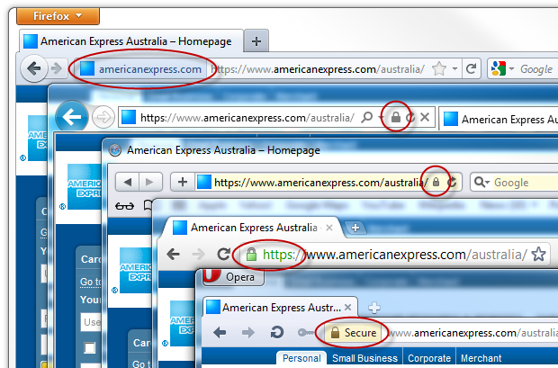

<!DOCTYPE html><html lang="en"></html><head><meta charset="utf-8"><title>SSL</title><!--<meta name="description" content="A framework for easily creating beautiful presentations using HTML">
<meta name="author" content="Hakim El Hattab">--><meta name="apple-mobile-web-app-capable" content="yes"><meta name="apple-mobile-web-app-status-bar-style" content="black-translucent"><meta name="viewport" content="width=device-width, initial-scale=1.0, maximum-scale=1.0, user-scalable=no"><link rel="stylesheet" href="reveal.js/css/reveal.min.css"><link id="theme" rel="stylesheet" href="reveal.js/css/theme/default.css"><!--<For>syntax highlighting </For>--><link rel="stylesheet" href="reveal.js/lib/css/zenburn.css"><!--<If>the query includes 'print-pdf', use the PDF print sheet </If>--><script>document.write( '<link rel="stylesheet" href="reveal.js/css/print/' + ( window.location.search.match( /print-pdf/gi ) ? 'pdf' : 'paper' ) + '.css" type="text/css" media="print">' );</script><!--[if lt IE 9]><script src="reveal.js/lib/js/html5shiv.js"></script><![endif]--></head><body><div class="reveal"><!--<Any>section element inside of this container is displayed as a slide </Any>--><div class="slides"><section><h1>Introduction to SSL (HTTPS)</h1><h3>AKA: What does that padlock on my internets mean</h3><p><small><a href="http://bjwebb.co.uk">Ben Webb</a>/<a href="http://twitter.com/bjwebb67">@bjwebb67</a>/<a href="http://github.com/Bjwebb/">Bjwebb on Github</a></small></p><aside class="notes">This session will be a bit different from the others as I'm covering something that's already used by most internet users, rather than introducing a new cryptography technology. More talk heavy, although there will be some workshop at the end if people are interested.</aside></section><section><h1>A note about naming</h1><ul><li>SSL (Secure Socket Layer) is actually the name of older versions. Newer versions are called TLS (Transport Layer Security)</li><li>HTTPS refers to SSL/TLS for websites</li><li>This talk only covers HTTPS</li><li>I will use 'SSL', as it's a common term, and easy to say.</li></ul></section><section><aside class="notes">Talking about what it means when your browser looks like this.</aside></section><section><aside class="notes">Or like this. Difference between those two slides, which I'll get to later.</aside></section><section><h2>SSL uses asymmetric encryption</h2><br><h2 class="fragment">But doesn't seem to require key exchange...</h2></section><section><h2>SSL Certificates</h2><p>Key signing happens for SSL. A signed public key along with identifying information is called a certificate.</p></section><section><h1>Chain of Trust</h1><h3>SSL is Hierarchical and Centralised</h3></section><section><p>A browser contain several root certificates. ......</p></section><section><!-- fix this name....--><h1>Website status</h1><ul><li>Secured</li><li>Extended Verification</li><li>Partly secured</li><li>Invalid certificate</li><li>Secured with an invalid certificate</li></ul></section><section><h2>Secured</h2><aside class="notes">Must be in the browser chrome.</aside></section><section><h2>Extended Verification</h2><aside class="notes">Difference in the amount of verification done by certificate authorities. Not necessarily any more 'secure', but you can be more sure it's who they say they are. Costs a lot of money.</aside></section><section><!-- Images for these......--><h2>Partly secured</h2></section><section><h2>Invalid certificate</h2><p>Not necessarily malicious, but unless you verify by other means, it could be.</p></section><section><h2>Secured with an invalid certificate</h2><p>Sometimes this is okay to do. Sometimes no worse than not using SSL</p></section><section><h1>Problems with SSL</h1><ul><li>Only happens if you ask for it</li></ul></section><section><h2>Only happens if you ask for it</h2><p>If you type in 'securesite.com' your browser defaults to insecure HTTP</p><p>If you get </p><p>However</p></section><section><h1>Problems with SSL</h1><ul><li>Only happens if you ask for it</li><li>Relies on trusting certificate authorities</li></ul></section><section><h2>Problems with trusting certificate authorities</h2><p>Comodo .............</p></section><section><h1>HTTPS Everywhere</h1><a href="https://www.eff.org/https-everywhere">https://www.eff.org/https-everywhere</a><aside class="notes">Ensures that you can use SSL anywhere you can</aside></section><section><h1>Perspectives</h1><a href="http://perspectives-project.org/">http://perspectives-project.org/</a></section><section><h1>Recap of Tools</h1><ul><li>HTTPS Everywhere</li></ul></section><section><h1>Any Questions?</h1><p><small><a href="http://bjwebb.co.uk">Ben Webb</a>/<a href="http://twitter.com/bjwebb67">@bjwebb67</a>/<a href="http://github.com/Bjwebb/">Bjwebb on Github</a></small></p></section><section><h1>Evil SSL</h1><h3>So you think you know what that padlock means?</h3><p><small><a href="http://bjwebb.co.uk">Ben Webb</a>/<a href="http://twitter.com/bjwebb67">@bjwebb67</a>/<a href="http://github.com/Bjwebb/">Bjwebb on Github</a></small></p></section><section><h1>Disclaimer</h1><h3>I'm not a professional security researcher</h3><aside class="notes">So I may well get some of this wrong myself!</aside></section><section><h2>This is a talk about SSL</h2><h1 class="fragment">FALSE</h1><aside class="notes">As I owned up to previously. Will continue to use the term, unless the distinction matters.</aside><!-- X.509 somewhere..... section about SSL certificate fun.....--></section><section><h2>Versions of SSL/TLS</h2><ul><li>SSL - developed by Netscape<ul><li>1.0 - Never released</li><li>2.0 - 1995</li><li>3.0 - 1996</li></ul></li><li>TLS - an IETF standard track protocol<ul><li>1.0 - 1999 (very similar to SSL 3.0) </li><li>1.1 - 2006</li><li>1.2 - 2008</li></ul></li><aside class="notes">TLS 1.0 is very similar to SSL 3.0 - the change in name is due a change in stewardship of the standard, not due to a change in technology.</aside></ul></section><section><h2>SSL uses asymmetric encryption</h2><h1 class="fragment">True, BUT...</h1></section><section><h2>Other Cryptography used in SSL</h2><ul><li>Symmetric Session keys</li><li>Hashing Algorithm</li></ul><aside class="notes">Asymmetric encryption is much more computationally intensive, so we use asymmetric encryption to encrypt a shared secret to use for symmetric encryption.</aside></section><section><h2>SSL is secure</h2><h1 class="fragment">FALSE</h1><aside class="notes">SSL 2.0 and earlier have serious vulnerabilities. You should avoid using a browser support these. Reason why SSL 3.0 was released only a year after 2.0</aside></section><section><h2>Don't use a browser that supports SSL2.0</h2><p>Not hard any more, SSL 2.0 is disabled in IE 7, Firefox 2, Opera 9.5, Safari and Chrome </p></section><section><h2>Symmetric Cipher Security</h2><aside class="notes">Depends on choice of server, so some websites are more secure than others</aside></section><section><h2>If I get a padlock, it's secure.</h2><h1 class="fragment">FALSE</h1><aside class="notes">Only if it's in the browser chrome. May seem obvious, but has big ramifications for design of seemingly unrelated features, such as browser full screen. </aside></section><section><h2>If I get a padlock, in my browser chrome, it's secure.</h2><h1 class="fragment">FALSE</h1><aside class="notes">Malware. Or Nokia.</aside></section><section><h2>I only need SSL when I'm sending important information like my login details</h2><h1 class="fragment">FALSE</h1><aside class="notes">Session cookies</aside></section><!-- Forward secrecy?--><section><h2>Any questions?</h2><h1 class="fragment">FALSE</h1></section><section><h1>Any Questions?</h1><p><small><a href="http://bjwebb.co.uk">Ben Webb</a>/<a href="http://twitter.com/bjwebb67">@bjwebb67</a>/<a href="http://github.com/Bjwebb/">Bjwebb on Github</a></small></p></section></div></div><script src="reveal.js/lib/js/head.min.js"></script><script src="reveal.js/js/reveal.min.js"></script><script>// Full list of configuration options available here:
// https://github.com/hakimel/reveal.js#configuration
Reveal.initialize({
controls: true,
progress: true,
history: true,
center: true,
transition: 'fade', // default/cube/page/concave/zoom/linear/fade/none
// Optional libraries used to extend on reveal.js
dependencies: [
{ src: 'reveal.js/lib/js/classList.js', condition: function() { return !document.body.classList; } },
{ src: 'reveal.js/plugin/markdown/marked.js', condition: function() { return !!document.querySelector( '[data-markdown]' ); } },
{ src: 'reveal.js/plugin/markdown/markdown.js', condition: function() { return !!document.querySelector( '[data-markdown]' ); } },
{ src: 'reveal.js/plugin/highlight/highlight.js', async: true, callback: function() { hljs.initHighlightingOnLoad(); } },
{ src: 'reveal.jsplugin/zoom-js/zoom.js', async: true, condition: function() { return !!document.body.classList; } },
{ src: 'reveal.js/plugin/notes/notes.js', async: true, condition: function() { return !!document.body.classList; } }
]
});</script></body>